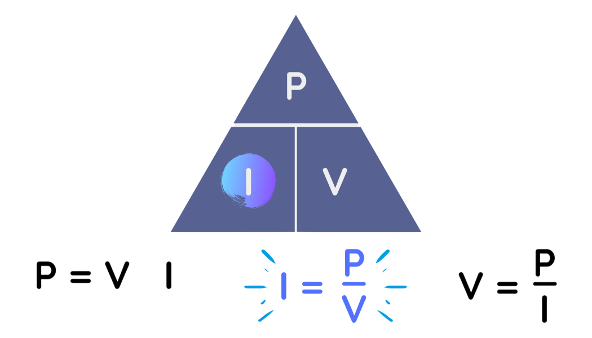

Ley de Ohm
La Ley de Ohm establece la relación entre el voltaje,
la corriente y la resistencia en un circuito eléctrico.
Fue formulada por el físico alemán Georg Simon Ohm.

Fórmula
V = I · R
- V = Voltaje (Voltios)
- I = Corriente (Amperios)
- R = Resistencia (Ohmios)
Ley de Watt
La Ley de Watt permite calcular la potencia eléctrica en un circuito.
Relaciona el voltaje y la corriente.

Fórmula
P = V · I
- P = Potencia (Watts)
- V = Voltaje (Voltios)
- I = Corriente (Amperios)
Efecto Joule
El efecto Joule es el fenómeno físico por el cual la energía eléctrica se transforma en calor cuando una corriente eléctrica circula por un conductor que tiene resistencia.
Explicación Sencilla
Cuando la corriente eléctrica pasa por un material (como un cable metálico), los electrones se mueven a través del conductor.
Durante ese movimiento, chocan con los átomos del material.
Estos choques producen energía térmica, es decir, calor.
Por eso los cables o resistencias se calientan cuando pasa corriente eléctrica.

Fórmula del efecto Joule
Q = I2 · R · t
- Q = calor generado (en joules, J)
- I = corriente eléctrica (en amperios, A)
- R = resistencia del conductor (en ohmios, Ω)
- t = tiempo que circula la corriente (en segundos, s)
Fundamentos
Electricidad
Es el conjunto de fenómenos relacionados con la presencia y movimiento de cargas eléctricas.
Electrón
Es una partícula con carga negativa que se mueve dentro de los materiales conductores.
Movimiento de electrones
Los electrones se mueven cuando existe una diferencia de energía (voltaje), lo que genera corriente eléctrica.
Flujo eléctrico
Sentido real
Los electrones se mueven del polo negativo al positivo.
Sentido convencional
Se considera que la corriente va del positivo al negativo para facilitar los cálculos.
Circuitos
Ánodo
Terminal positivo por donde entra la corriente convencional.
Cátodo
Terminal negativo por donde sale la corriente.
Fuente de alimentación
Elemento que suministra energía, como una batería o enchufe.
Receptor o carga
Elemento que consume energía, como un bombillo o celular.
Circuito eléctrico
Conjunto de elementos conectados que permiten el paso de la corriente.
Magnitudes eléctricas
Carga eléctrica: cantidad de electricidad (Coulomb).
Corriente: flujo de electrones (Amperios).
Voltaje: diferencia de energía (Voltios).
Resistencia: oposición al paso de corriente (Ohmios).
Potencia: energía consumida (Watts).
Diferencia entre electricidad y electrónica
La electricidad se enfoca en el transporte de energía, mientras que la electrónica
se encarga de controlar y utilizar esa energía para realizar funciones específicas
como en celulares, computadoras y circuitos inteligentes.
Aplicación: Cargador de celular
¿Qué cambia? El voltaje se reduce de 110/220V a 5V.
¿Por qué? Porque el celular necesita bajo voltaje para funcionar sin dañarse.
Voltaje: está en la salida del cargador.
Corriente: circula por el cable hacia el celular.
Resistencia: está en los componentes internos del cargador.
Tipo: se usan electricidad (energía) y electrónica (control).
Calor: parte de la energía se transforma en calor (efecto Joule).